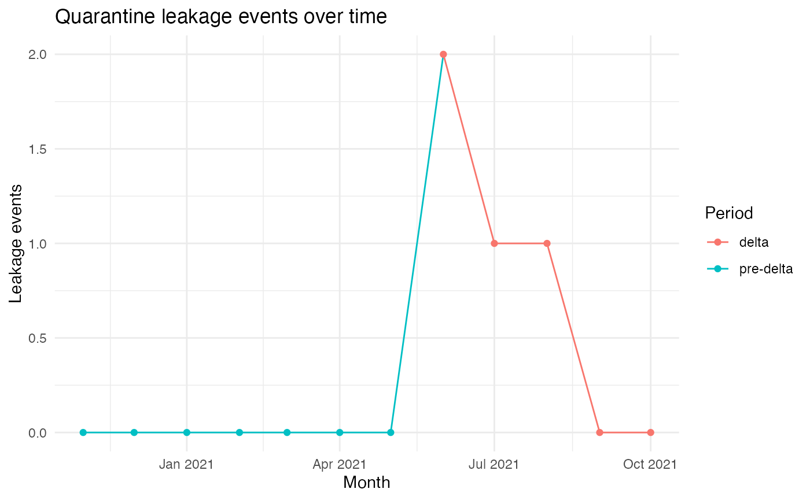

Exploring quarantine performance during the Delta period
Jin Hu
2025-11-03
deltaoutbreak-intro.Rmd
library(deltaoutbreak)
library(dplyr)
#>
#> Attaching package: 'dplyr'
#> The following objects are masked from 'package:stats':
#>
#> filter, lag
#> The following objects are masked from 'package:base':
#>
#> intersect, setdiff, setequal, union
library(ggplot2)Background
This package reconstructs a synthetic dataset based on the article:
“COVID-19 in low-tolerance border quarantine systems: Impact of the Delta variant of SARS-CoV-2” (PMC8993115)
The original article did not publish row-level data. We therefore simulated monthly observations representing arrivals, detected infections in quarantine, leakage events, and resulting local cases. The aim is to provide a teaching dataset that still shows the key pattern from the paper: the Delta period placed greater pressure on border quarantine systems.
Load the data
data("delta_cases")
dplyr::glimpse(delta_cases)
#> Rows: 12
#> Columns: 9
#> $ date <date> 2020-11-01, 2020-12-01, 2021-01-01, 2021-02…
#> $ period <chr> "pre-delta", "pre-delta", "pre-delta", "pre-…
#> $ variant <chr> "pre-Delta-variant", "pre-Delta-variant", "p…
#> $ arrivals <int> 1158, 1209, 1179, 1090, 1270, 1015, 1069, 10…
#> $ detected_in_quarantine <int> 6, 4, 5, 8, 4, 4, 2, 12, 15, 9, 11, 14
#> $ leakage <int> 0, 0, 0, 0, 0, 0, 0, 2, 1, 1, 0, 0
#> $ local_cases <int> 0, 0, 0, 0, 0, 0, 0, 22, 7, 9, 6, 4
#> $ leakage_per_1000_arrivals <dbl> 0.000, 0.000, 0.000, 0.000, 0.000, 0.000, 0.…
#> $ detected_rate <dbl> 5.181, 3.309, 4.241, 7.339, 3.150, 3.941, 1.…Summaries by period
We can use the helper function that ships with the package:
summarise_leakage(delta_cases)
#> # A tibble: 2 × 7
#> period n_months total_arrivals total_leakage total_detected
#> <chr> <int> <int> <int> <int>
#> 1 delta 5 4805 4 61
#> 2 pre-delta 7 7990 0 33
#> # ℹ 2 more variables: mean_leakage_per_1000 <dbl>, mean_detected_rate <dbl>This table should show that the delta period has higher detected infections and more leakage on average.
Plotting leakage over time
plot_leakage_trend(delta_cases) This plot illustrates how leakage events changed around mid-2021, when we switch from pre-delta to delta.